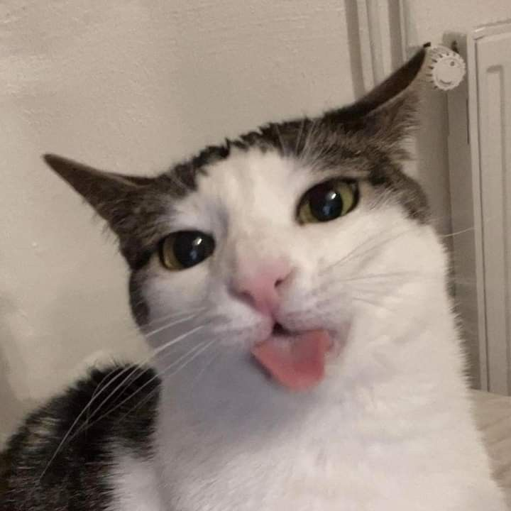

Meet Luna, the feline embodiment of joy and curiosity. With her sleek, ebony fur shimmering in the sunlight, Luna prowls the house with the grace of a dancer and the mischief of a perpetual kitten. Yet, it's not just her elegant poise that captures attention; it's the distinct soundtrack that accompanies her every move - the symphony of crunches that echo through the halls.
Luna is no ordinary cat; she's the connoisseur of crunch. From the crackle of a fallen leaf to the crisp snap of a cardboard box, Luna finds delight in the auditory sensation of each step. No crunchy object is safe from her vigilant ears, and no crinkle escapes her keen attention.
Witness Luna's morning routine as she embarks on her crunchy conquest. With the dawn's first light, she emerges from her slumber, ready to seize the day with fervor. First on her agenda? The breakfast bowl. As Luna nibbles on her kibble, each bite is a harmonious cacophony of crunches, setting the tone for the day ahead.
But Luna's appetite for crunch extends far beyond the confines of her food bowl. She's a seeker of adventure, always on the hunt for the next crunchy conquest. Whether it's pouncing on a pile of fallen leaves or investigating the crinkling mystery of a paper bag, Luna approaches each crunchy encounter with unbridled enthusiasm.
Yet, amidst her quest for crunch, Luna's heart is as soft as her fur. With a gentle purr and a nuzzle of her whiskers, she reminds us that life's greatest pleasures are often found in the simplest of joys. For Luna, it's not just about the crunch; it's about embracing the symphony of life's little moments, one crunchy step at a time.
Animal: Cat
color: white and Grey
Cat Name: Luna
Nickname: None
